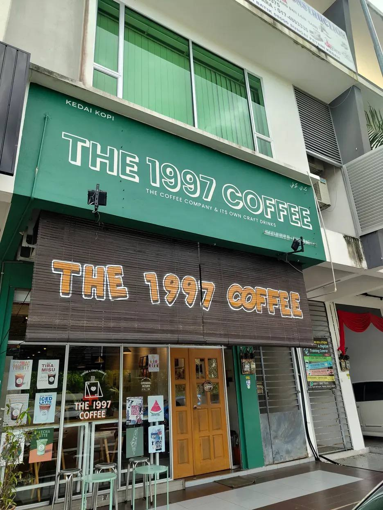

🍜 Kedah Food Trail
The 1997 Coffee

The 1997 Coffee is a modern café in Sungai Petani that offers a comfortable and stylish dining environment for coffee lovers and casual visitors.
Known for its coffee selection and café-style menu, it serves a variety of beverages, desserts, and light meals, making it a suitable place for relaxing, studying, or spending time with friends and family.
The café has become a popular spot among locals for its cozy atmosphere and social dining experience.
Restaurant Information
📍 Location: Jalan Batik 2/1A, Sungai Petani, Kedah
🕒 Opening Hours: 10:00 AM – 10:00 PM
💰 Price Range: RM1 – RM20 (per person)
⭐ Rating: 4.8 / 5
🎥 Quick Restaurant Tour
Take a quick look at the restaurant atmosphere, food presentation and dining experience.
⭐ My Review
The 1997 Coffee is a cozy café with a nice atmosphere, good for chilling or hanging out with friends. The drinks and food are tasty, especially their signature coffee and creamy dishes, and the prices are quite reasonable.